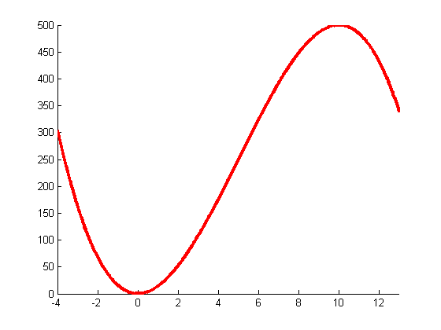

A non convex function in 1d
% This file is from pmtk3.googlecode.com function nonConvexFn hold all; xmin = -4; xmax = 13; ymin = -50; ymax = 600; domain = xmin:0.01:xmax; f = @(x)-x.^3 + 15*x.^2; Xk = 8; f1 = @(x) -3*x.^2 + 30*x; f2 = @(x) -6*x + 30; t = @(x) f(Xk) + f1(Xk)*(x - Xk) + (1/2)*f2(Xk)*(x - Xk).^2; [val, maxNDX] = max(t(domain)); maximum = domain(maxNDX); plot(domain,f(domain),'-r','LineWidth',3); axis tight; end